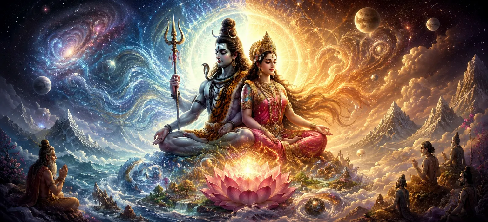

The first chapter of Srishti Khanda opens the divine account of creation according to the Shiva Purana. Before the existence of the worlds, time, gods, or living beings, only the Supreme Reality—Lord Shiva—existed in His eternal, infinite, and formless nature. From His boundless divine power emerged the cosmic process through which the universe, the gods, and all forms of life came into existence. This sacred chapter reveals that creation is not merely a physical event but the manifestation of Shiva's eternal will, wisdom, and compassion for all beings.
As this sacred journey begins, devotees are invited to understand the deeper spiritual meaning behind creation and recognize Lord Shiva as the eternal source, sustainer, and ultimate refuge of the entire universe. Every verse inspires humility, devotion, and the realization that all existence originates from and ultimately returns to Mahadeva.
Before the creation of the universe, there was no earth, no sky, no oceans, no mountains, and no living beings. Neither day nor night existed, nor could time be measured. The Vedas describe this mysterious state as one beyond all material existence. In that timeless silence, only the Supreme Lord Shiva existed—self-effulgent, eternal, and infinite. He depended on nothing, yet everything that would ever exist rested within His divine consciousness.
The Shiva Purana proclaims that Lord Shiva is not merely a deity among many but the Supreme Reality beyond birth and death. He has neither beginning nor end and exists beyond space, time, and matter. Every universe appears by His divine will and ultimately dissolves back into Him. Because He is eternal, He remains unchanged even while countless creations arise and disappear throughout infinite cosmic cycles.
Although Lord Shiva is complete in Himself and lacks nothing, He chose to manifest creation out of His boundless compassion and divine play. The universe was not created because of necessity but as an expression of His infinite wisdom and grace. Through this sacred act, countless souls were given the opportunity to experience life, perform righteous actions, cultivate devotion, and ultimately attain liberation by realizing their eternal relationship with Mahadeva.
The opening chapter of Srishti Khanda teaches that creation is far more than the appearance of the physical universe. It reminds every seeker that the visible world is rooted in an eternal spiritual truth. By understanding that all existence originates from Lord Shiva, devotees cultivate humility, gratitude, and unwavering devotion. This wisdom becomes the foundation for every sacred narrative that follows throughout Rudra Samhita.
Before the appearance of the worlds, there was neither earth nor sky, neither day nor night, neither life nor death. Time itself had not yet begun its eternal journey. All existence rested in absolute stillness, beyond thought and beyond imagination. This state was not emptiness but infinite divine potential, where only the Supreme Lord Shiva existed in His formless and eternal reality.
Lord Shiva exists beyond birth, death and time itself.
His true nature cannot be limited by any physical form.
Every universe originates, exists and dissolves through His divine will.
Although the Supreme Lord is complete in Himself, creation manifests through His divine play known as Leela. Through creation, countless souls receive opportunities to perform righteous actions, gain spiritual wisdom, overcome ignorance, and ultimately realize their eternal unity with Shiva. Thus creation is not an accident but a compassionate expression of divine grace.
Every form of existence ultimately traces its origin back to the Supreme Lord.
Life is an opportunity for spiritual growth rather than mere worldly enjoyment.
The highest goal of every soul is to rediscover its eternal relationship with Shiva.
When the proper cosmic time arrived, the Supreme Lord Shiva desired to manifest the universe through His own divine power. This desire was not born from necessity, for Shiva is eternally complete and perfect. Rather, it arose from His infinite compassion so that countless souls might experience life, perform righteous deeds, attain spiritual wisdom, and ultimately return to Him. Thus, creation itself became an expression of His boundless grace.
The eternal, formless Supreme Reality from whom all existence begins.
The divine energy through which the Lord performs creation, preservation and dissolution.
The universe unfolds when Shiva and Shakti act together in perfect harmony.
As creation began to unfold, limitless cosmic waters spread throughout the universe. These sacred waters symbolized the unmanifest state from which all forms of existence would gradually emerge. Within this boundless ocean rested the divine mystery of creation, awaiting the Lord's command for the appearance of worlds, beings, and celestial realms.
The universe operates according to the eternal law established by Lord Shiva.
Every creation has a meaningful place within the Lord's divine plan.
Every soul is created to progress toward eternal union with Lord Shiva.
Desiring the orderly manifestation of the universe, Lord Shiva first revealed the divine form of Lord Vishnu from His own infinite power. Vishnu was endowed with immeasurable wisdom, boundless compassion, and the sacred responsibility of preserving creation. He appeared radiant like millions of suns, yet serene like the still waters of eternity. With folded hands and deep humility, Lord Vishnu bowed before the Supreme Lord, awaiting His divine command.
Lord Vishnu was entrusted with protecting righteousness throughout every age.
He would preserve the balance of the universe through divine compassion.
Every divine action of Vishnu would ultimately fulfill the will of Lord Shiva.
Having received the blessings of Lord Shiva, Vishnu entered deep meditation upon the Supreme Lord. Through this meditation, divine energy spread throughout the cosmic waters, preparing the universe for the appearance of Brahma and the unfolding of creation. Every stage of creation was guided not by chance but by the eternal wisdom and supreme will of Mahadeva.
The appearance of Lord Vishnu teaches that every divine responsibility begins with humility, devotion, and complete surrender to the Supreme Lord Shiva. Creation flourishes only when it follows the eternal order established by the Lord.
Before the first breath of creation, the universe rested in absolute silence. There were no sounds, no movement, no light, and no darkness. Space had not yet expanded, time had not begun its endless journey, and the countless worlds remained unmanifest. This sacred stillness was not emptiness but the perfect peace of the Supreme Reality, where all existence rested in complete harmony before creation was destined to unfold.
The mountains, rivers, stars, planets, living beings, sages, gods, and even the sacred scriptures existed only in an unseen and potential form within the Supreme Reality. Nothing had yet appeared, yet everything already existed through the infinite divine consciousness. The Shiva Purana teaches that creation is not born from nothing; it unfolds from the eternal source that contains all existence.
Creation began through the limitless compassion of the Supreme for all future beings.
Every stage of creation would serve the spiritual evolution of countless souls.
Nothing would arise randomly; every event would follow the eternal order established by the Supreme.
The opening chapter of Srishti Khanda reminds every seeker that the universe is neither accidental nor without purpose. Every living being, every world, and every moment of existence originates from the Supreme Divine Reality. By contemplating this truth with devotion and humility, one gradually understands that all creation is sacred and that the path to liberation begins by recognizing its eternal source.
You have completed the opening chapter of Srishti Khanda. Continue to discover the eternal nature of Lord Shiva and the divine mystery behind all creation.